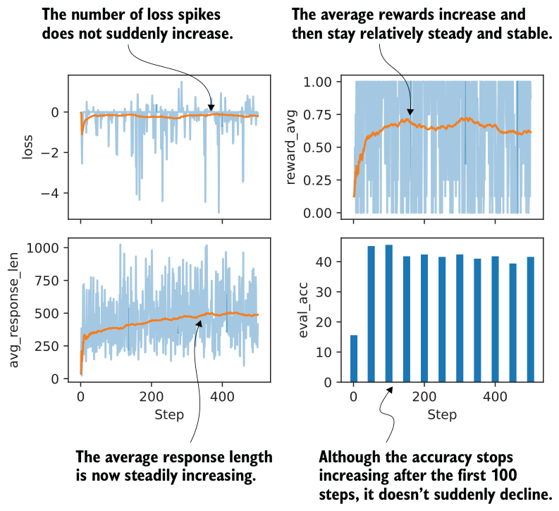
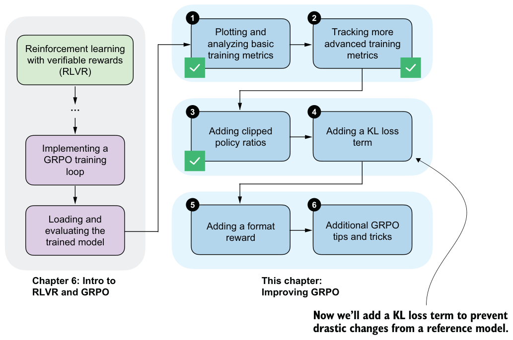

7.4.2Training with clipped policy ratios
We can apply the clipped policy ratio and policy loss computations from listings 7.7 and 7.8 to see if they help stabilize training.
The modified code can be downloaded from the supplementary materials as follows:
download_from_github(
"ch07/03_rlvr_grpo_scripts_advanced/7_4_plus_clip_ratio.py"
)And we can run it as before:
uv run 7_4_plus_clip_ratio.py \
--steps 500 \
--max_new_tokens 1024As discussed in the previous section, the policy ratio compares logprobs computed under the current policy with those from a previous version of the policy. In practice, this means that we first need a batch of sampled responses whose old_logps are measured under a fixed reference policy. We can then compare those same responses with the current model, which changes during optimization, to form the clipped policy ratio update.
DeepSeek-R1 does this at large scale by generating a large rollout pool once (8,192 responses), holding those responses fixed, and then stepping through them in 16 minibatches. At a high level, the process is as follows:
1 Make a copy of the current model as the reference policy.
2 Sample a big rollout pool using the reference policy.
3 Split those fixed rollouts into minibatches.
4 For each minibatch:
a Compute old_logps under the reference model.
b Compute new_logps under the current model (which changes after each minibatch update).
c Update the current model.
5 Update the reference model.
Due to resource constraints, we cannot generate as many rollouts and minibatches as DeepSeek-R1 does, so we’ll use a smaller approximation. Instead of generating one huge fixed rollout pool and slicing it into minibatches, we’ll generate a small batch of rollouts, update the model on that batch, and then repeat the process with a fresh batch. The procedure in the 7_4_plus_clip_ratio.py script is as follows:
1 Make a copy of the current model as the reference policy.
2 Sample eight rollouts using the reference policy.
3 Then, a Compute old_logps under the reference model.
b Compute new_logps under the current model.
c Update the current model.
4 Repeat steps 2 and 3 (by default, one more time) with different rollouts instead of using minibatches.
5 Update the reference model.
In short, DeepSeek-R1 generates a huge rollout pool once and then reuses it across minibatches before refreshing the reference model. In our code, we mimic this idea more cheaply by generating a small batch of rollouts multiple times instead.
A log file from the 7_4_plus_clip_ratio.py training run can be downloaded and visualized as follows:
download_from_github(
"ch07/02_logs/7_4_plus_clip_ratio_metrics.csv"
)
plot_grpo_metrics(
"7_4_plus_clip_ratio_metrics.csv",
columns=["loss", "reward_avg", "avg_response_len", "eval_acc"]
)Figure 7.13 shows the resulting plot. Compared to the previous training runs, this training with clipped policy ratios is more stable, as there is no visible drop in the average reward or evaluation accuracy around the 400-step mark.
We could also plot and inspect the other metrics, such as policy_ratio, adv_avg, adv_std, and entropy_avg. I’ll leave that as an exercise for you to try.

7.5Controlling how much the model changes with a KL term
In chapter 6, we skipped using the KL loss term in the GRPO algorithm to keep the presentation manageable. To complete the GRPO algorithm, we’ll now add the KL loss term, as outlined in figure 7.14.
KL is short for Kullback–Leibler divergence, and it measures how much the current policy, that is, the LLM being trained, deviates from a reference policy, typically the original model at the start of training. The KL term acts as a constraint (technically called a regularizer) that discourages overly large updates and keeps the model close to its original behavior, preventing drastic or unstable changes.
This is closely related to the clipped policy ratios we introduced earlier. With clipped policy ratios, we limited how large individual update steps could be. The KL term is another mechanism for controlling how much the model can change. While clipped policy ratios focus on limiting changes between steps, the KL term is often used to control change over the longer training trajectory.
